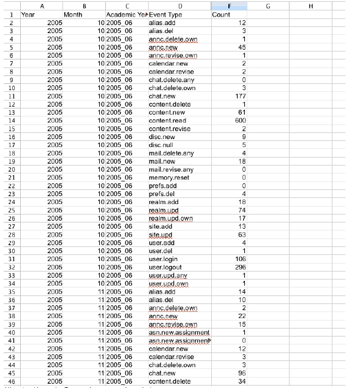
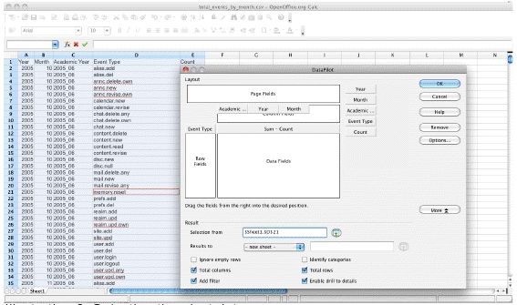
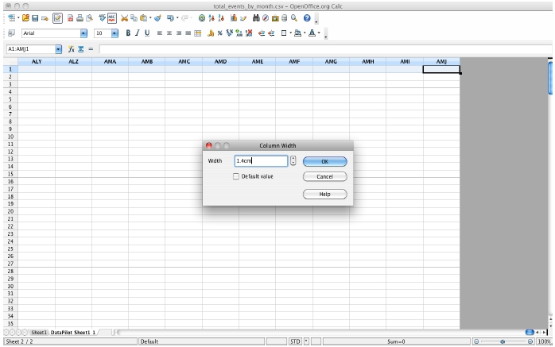
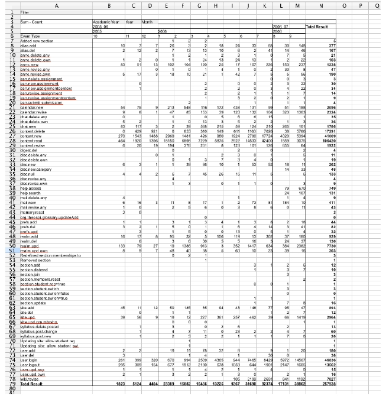

How to Pivot data in Open Office Spreadsheet
Originators/Authors
Anne Clarke
Exposing VLE activity data
, University of Cambridge
Purpose
Instructions on how to work with output stats data in an OpenOffice spreadsheet to create a Pivot
Table.
Background
We have developed tools that can be run to extract various counts (unique logins, number of each
type of event) on a granular scale; for instance per month or per week. This allows investigation of
the fluctuation of these interactions.
However to see aggregated totals per Event Type or per Institution we can use the Pivot
functionality within a spreadsheet. This document gives instructions for OpenOffice.
Ingredients
- CSV file containing granular results of running Perl Stats routines on the
- database eg total_events_by_week.csv, unique_instids_by_month.csv
- This file should have appropriate column headings in the first row OpenOffice application
Assumptions
The user has basic spreadsheet knowledge and some familiarity with OpenOffice.
Method
You will first use OpenOffice to open the CSV file. Then you select the data, enter grouping
information and create a Pivot table giving an aggregated view of the data.
Individual steps
- Open your results CSV file in OpenOffice:

Illustration 1: Sample granular data
- Use short cut keys to select all the data (make sure you select just the data not the whole spreadsheet).
- Data->DataPilot->Start
- Ok to using current selection
- Wait patiently for some time – you will see the Data Pilot window:
- Move the field names to the Rows and Columns as appropriate. Normally you will be putting a numeric value in the data field.
- The example below users Academic Year, Year, Month as the column headings for the pivoted table and event type to aggregate values over. The sum of the counts form the data fields.
- Click on the More button
- Choose to display “Results to” in a new sheet (if you don't do this, the results will appear below the current sheet. Click Ok.

Illustration 2: Selecting the pivot data
- Now the pivot table is there.
- Format columns etc to beautify. Select all the columns then
- Format>Column>Width

Illustration 3: Setting the Column Width
- Format the left and rightmost columns … and here is the result:

Illustration 4: Sample showing data pivoted for Academic Year 2005-06